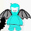

I have a contest for you! It's not that easy!!!
You have to look at this picture attentively and find what is wrong there!

You have to find all "wrong" things! A winner gets 2000 bugs!
Don't forget to leave your Chobots name in a comment.
ATTENTION GUYS!!! YOU AL ARE MISSING 1 DETAIL!!!! YOUR ANSWERS WERE RIGHT!!! BUT THERE IS 1 MORE TINY DETAL!!! FIND IT!!! DONT FORGET ABOUT 2000 BUGS!!! THEY ARE STILL WAITING FOR THE WINNER!!!
Hiki

-2.jpg)


171 comments:
Th Gamezone ball, in the top it's orange not green
I said i knew everything in the game :D
First to comment, BTW :)
THeres no money and a smiley face in the ball
No arrrow on sign by the exit to shop street
no arrow on sign, no bugs, wrong color of ball on game place, question mark shoulod be ! and the red ball has a face on it! and chat bar ball is yellow! hope that helps!
YEs norgolbo is also right the ball is orange not green
Also!! A plant is missing by the top of the cafee!!
Gamezone top, no arrow in sign, no little ball in Underground thing, Wrong sign in Snail chob button, no bugs, color ball is smiling and wrong history chat button color!
The Help button shouldnt be a "!"
plant missing above cafe too
Last one sorry the chat button to see the history is yellow nnot green!
Your bugs dont show
The sign near the entrance to citizen wall is blank.
The red ball has a smiley face
The chat history button is not green
The ball on the gamezone at the very top is orange,not green
The help button has a exclamation mark instead of question mark.
i think i got them all 1st!
Sorry i saw another! XD Underground has no dot thingyy
no dot
A plant is missing from the cafe, theres no arrow on the sign a tree is half blue and half green,theres no money in the left hand corner,theres a green ball on top on game zone the red ball which u throw on a tree has a face on it and where ur going up the stairs theres not a blue point and thats it my name is plunder on chobots.
1.the chatbox dot is yellow
2.theres is a face on the red ball
3.the top of the gamezone is green
4.the money box is blank
5.no arrow pointing to shop street
6.part of the green tree is blue
7. there is a missing plant in the top left hand corner
8.the help icon is a !
thats all i could find for now
chobot name: kukazu
thats them all i think!
no arrow on the sign pointing to the shop square, the red ball has a smily face, the gamezone ball ha a weird color, The thing that shows how many bugs there is is gone, the help signs a !, yellow chat history button instead of a green, one of the trees is half blue half green, a plant under the bug sign is gone,
is that all? idk
justadude
doesnt show bugs, the red ball next to tree has smile face, it says ur just a citizen and ontop of gamezone there is a greenball
no sign to shop st.
1. The Gamezone ball is green
2. There is a face on the red ball
3. There is no dot on the underground entrance
4. The tree is half blue half green
5. There are no bugs
6. The help icon is a !
7. The arrow to the shop is missing
8. The ball on the chatbar is yellow
9. There is a missing plant above the cafe.
10. There tree near the red ball with the face is blue (i didnt know if u changed it to that)
Chobot name: Sparks
no monkey and orange ball with face any no arows!
No money, smiley face on the red ball, the question mark is a ! right next to the help in the right corner, the is no arrow on the sigh, the dot in the underground is gone, and the ball on the game zone is orange not green, there is a plant missing from the cafe( flowers),and the history chat is not orange its green. Thats all hope i got it all!!!
I need money:)
the ball on the game zone is supose to be orange but it's green we can't see your money no arrow on the sigh to the shop and a smiley face one the red ball also on the tree it's blue and green! --Tdawg
And the tree at cafe is kinda blue!!!
the red ball has a face, in the right hand corner instead of a ? its a !, u dont have ur money on ur bar, the gamezone war is orange not green, no arrow to the sign going to the shop,the chat bar ball is not yellow it should be green, plat is missing by cafe, there should be a purple dot on the entrance to the underground,and part of the green tree is blue by the cafe
-Smashorama
1. no bugs
2. the question mark is changed to a !
3. There is no dot in the middle of the underground entrance
4. There is no arrow on the sign
5. The red ball has a smily face
6. The gamezone ball is green
7. The tree at the top is 3/4 green 1/4 blue
8. The chat bar chat history button is yellow
9. The font of your name under your player is different. (dunno whether is is one or not.
10. There is a missing plant above the cafe
11. The arrow to the cafe is gone
Chobots name: mimorulz
Tree is half blue -mcho04-
1.it deosnt show your money
2.the red ball that u throw has a smiley face
3.the thing ontop of the arcade is suppose to be orange not green
4.the ! is suppose to be a ?
5.the chat history thing is orange onstead of green
6.the tree is a different color
7.there is no arrow pointing to the shop square
8.there is no arrow on the floor pointing to the cafe.
9. there is no dot on the entrance of the underground
10. half of the tree at the top is blue and green
11.there is a missing plant on next to the cafe
chobot name: warrior7878
there is a smiley face on the ball
gamezone ball is orange not green
the bugs are missing
the sign by the shop square has nothing on it
chobot name-muttly
1. no bugs
2. the question mark is changed to a !
3. There is no dot in the middle of the underground entrance
4. There is no arrow on the sign
5. The red ball has a smily face
6. The gamezone ball is green
7. The tree at the top is 3/4 green 1/4 blue
8. The chat bar chat history button is yellow
9. The font of your name under your player is different. (dunno whether is is one or not.
10. There is a missing plant above the cafe
11. The arrow to the cafe is gone
thats it
1. no bugs sign
2. arrow at the thing that shows "shop Square"
3. No arrow at the entrance at Cafe
4. The bigger ball above G0amezone is green, not red
5. there is a smiley face on the red ball on he ground
6. the dot on the Undergroand entrance is missing
7. a flower pot is missing, above the Cafe
8. a bit of the tree in the right of the Cafe is blue
9.on the right corner, on the help icon there is "!" not "?"
10. On the Chat History button there is yellow, not green
coolina my name the red ball has a face. on top of game zone the ball is orange not green no money. no arrow to exit shop st. wrong sign in snailcobob's button. no little dot on underground enterance.the dot to see chat history should be green.
I Know the red ball has a smille face
Oops i tottaly forgot one!! the arrow to the cafe is gone!! Here is my new list:
1. The Gamezone ball is green
2. There is a face on the red ball
3. There is no dot on the underground entrance
4. The tree is half blue half green
5. There are no bugs
6. The help icon is a !
7. The arrow to the shop is missing
8. The ball on the chatbar is yellow
9. There is a missing plant above the cafe.
10. There tree near the red ball with the face is blue (i didnt know if u changed it to that)
11. The arrow to the cafe is missing
Chobot name: Sparks
-the tree on the top is 1/3 blue
-the button on the chat history orange instead of green
-the orange ball on the gamezone is green instead of orange
-there's a smiley face on the red ball :]
-no bugs on the bug box
-there's a purple dot missing in the entrance of the underground
-the box by the underground has no arrow
~Atena
hope i win :)
also the ? sign on the right corner is a ! wonder wat dat means
So how many errors? :) LOL
one of the balls have: :] on it
no arrow on sign, no bugs, wrong color of ball on game place, question mark should be ! and the red ball has a face on it! and chat bar ball is yellow! Exclamation mark sign on side of screen!
I am sainas
1 :Sign post
2 : money
3 :The explantion
4 :the dot in the underground
5 :the smile on the red water ballon
6 :on top of the arcade needs to be yellowish
7 :the dot on the chat bar
8 : last the flower left top
9 : the arrow ( cafe)
10 : the tree on top is blue and green
11 : the tree by the arcade is blue
12 : Last but not least your name
8 errors!
smiley red ball
1)Smiley face in paint ball
2) The ball on top of gamezone is green.
3) Half of the tree above the cafe is blue.
4) The dot on the undergrounf=d entrance is gone
5) The arrow on the aign to shop street is gone
6) One of the pink flowers behind the cafe is gone
7) The white arrow in front of the cafe is gone
8) The amount of bugs is gone
9) The question mark on the help button is shown as a exclamation point
10) The button for chat history is orange.
from,
neon
gamezone ball wrong color ! mark not ? on the info no arrow on the sign no bugs on the bug list
Sk8rman
I have circled the items on a picture, i will send it very soon,
~ lucylazylocket ~
the red dot has a face the gamezone ball is the wrong color it says u have no bugs there is no arrow on the sign i think thats all :) tell me if im wrong
The money icon,the flower box on the left,the sign to the shopping area,the dot on the door to the underground,the chat history button,the arrow to the cafe,the ball on the top of gamezone,the smiley face on the throwing ball,the blue stuff on the tree near the cafe.
chobots name:felix10
no arrow green ball the ball in the chat bar. the smily face on the red ball the jonior sign is blanked out and the help button has a ! instead of ?
neon20
the ball has a smiley face and there is no bugs
Green Gamezone Ball,and 2 blank spaces Mrblack2003
oh and history button
There is No money, smiley face on the paint ball, the gamezone ball is green, the underground has no purple dot in the middle, a plant is missing by cafe and the arrow pointing to the shops is missing and the help button has a '!' instead of a '?' :D
hope i win...
-Xcho04
and history button is yellow not green
Hi,
There is 12 errors in the picture!
Chobots name: Jedilachlan
no smiley face on the ball there is a dot on the underground door thing the help button is a "?" not a "!" and there is a arrow on the sign and the tree is just green not green and blue. ~Erpy
oh and there is sopose to be bugs ~erpy
theres a green ball on top of the gamezone. No arrow on the sign and then the smiley face
oh and no bugs lol :)
here they are:theres a green ball on top of the gamezone. No arrow on the sign and then the smiley face and no bugs
and the little blue thing on the right is missing
Part of the tree is painted. One of the color ball has a face. The sighn by the "underground" needs an arrow. The ball on top of the arcade needs to be golden. The button with a ? needs to be a ! There is no money. The botton that shows the chathistory is supposed to be green. :) i hope i won.
the gamezone ball is green.theres a smily face on red thing u throw at trees.one tree is like blue and green.no arrow at shop steert.the bugs thing is missing.the chat bar is yellow.the purple dot on the underground trigle is missing.the arrow into the cafe is missing.one of the purple plants by the cafe is missing.
aarondeathking44 chow
1.theres no money showing
2.gamezone ball is different colour
3.theres a red smiley on the ball
4.the arrow for shop street is missing
5.the help button is ! it has to be ?
6.the chat history is yellow it has to be green
hope i win lol :)
Name:Bube07
i fogrot this
7.a plant is missing up to caffee shop
8.the tree next to gamezone is painted blue
9.the arrow for to enter the caffee shop is missing
10.at the enter to underground theres a little ball missing
thats it
again
name:bube07
ah sorry i saw another one
11.a part of the tree next to caffee shop is paintet blue
p.s i didnt stole any or the comments its true i dont read comments
name:bube07
Hi. Were the white marks are is wear things are missing and wrong please goto http://4.bp.blogspot.com/_5puv0zGnXI0/Shh07xoe4QI/AAAAAAAAAEo/lP8hWORcRT8/s1600-h/Wrong.bmp to see the answers.
the circle on top of game zone is green when its orange.
chobotmovie1
no smileys
the thing by the top of gamezone thing is not green it is orange not green
the arrow from the sign is missing
history chat button is green not yellow
Plant is missing from the cafe
The ! by the menu button should be a ?
the tree is blue and green
We don't see any bugs
The arrow to the cafe is missing
hope i win
the diffrences are:
1.there is a smiley face at the red ball.
2.there is no dot at the underground entrance.
3.there is no arrow at the board that is facing the left.
4.there is an exclamation mark at the button at the top.
5.there is one mission flower behind the cafe building at the top.
6.the ball at gamezone is green rather than orange.
7.at the top off the screen the bugs cant be shown.
~leone123~
The things are:
1) the ball on the gamezone it's orange not green
2) the arrow to shop street
3) one of the flowers at the top are missing
4) the thing that tells you how many bugs you have is missing
5) the red ball has a face on it
6) the question mark ("?") is an exclamation mark ("!")
7) the chat history button is yellow not green
8) the dot on the underground entrance is gone
9) the tree at the top is blue and green
10) the bubble things aren't above the flowers
11) the color of your name is different
my name on chobots is mario42402
On the help button, it has a 'explination mark' instead of a ';question mark'. I took me a while to see it! ~Smirk~
There are lots and lots of things wrong, but I decided to pick the one that stood out the most, and great job on your blog! Luv Smirk
1.Gamezone ball on top.
2.No money on the bugs button.
3.No arrow on the sign beside the cafe shop.
4.The red ball with the smily face.
5.The Citizen button is suppose to be Junior.
Thats all I can think about!
1. the ball on top of the gamezone is orange, when its normally green.
2. Some of the plants are missing above the cafe.
3. There are no bugs.
4. On the help button theres a ! sign instead of a ? sign.
THere are loads more, i know, but everyone else has said them, so I dont want to be a copy cat! ;) By Smirk and friend lovemeloveme (who is unfortunately quitting chobots, dang!)
1.no arrow sign
2.no bugs or sign
3.exclamation mark instead of q mark
4.there is a face on the red ball
5.there is plant missing above cafe
6.history chat button is yellow
7.there blue leaves instead of green
8.There is no dot on the underground entrance
loy121
The red ball in the background has a smiley face on it. The gamezone ball is green instead of orange. A tree beside the Cafe has a leaf that is blue. There is no money for your chobot :]. The sign leading to Shop Square has no arrow. The help button has an ''!'' in it. The circle on the chat bar is yellow, I hope I win! And that's it I think!! My chobots name is Georgey
ecxlemation mark instead of Q mark at top-right
bugs
chat history is yellow button
arrow missing that points to shop square
the tree in the top-center is half blue half green
smiley face on red ball
the ball on top of gamezone is green;not orange
All I can find,~nathaniel9909
and i 4got the dot in the center of the underground entrance
~nathaniel9909
gamezone ball is green, smiley face in ball next to tree, no arrow on sign, no bugs, exclaimation mark on red button should be a question mark, chat bar box circle thingy is yellow no purple hole on door in underground, a tree is part green part blue.
my chobot name is sunset640.
I KNOW WHAT ELSE NO ONE SPOTTED... THERE IS WHITE ARROW MISSING POINTING TO CAFE!
red ball has a mouth and eyes of a ball from gamezone is orange and not green
the gamezone ball, in the top its orange and theres no money and a smiley face in the ball and no arrow on sign by the exit to shop street and the ! should be a ? and the chat bar is yellow and a plate is missing on the top of the cafee and the wall is blank i hope that is right!!!
FANO1 IS MY CHOBOTS NAME
the gamezone ball, in the top its orange and theres no money and a smiley face in the ball and no arrow on sign by the exit to shop street and the ! should be a ? and the chat bar is yellow and a plate is missing on the top of the cafee and the wall is blank i hope that is right!!!
no money theres a smiley on the red ball and isent the name:monkee not moonkee! oh yea no arrow on the arrow sign and chat bar and one ball is wrong colored
THERES NO MONEY
NO DIRECTION SYMBOL FOR GOING TO SHOP
SMILEY FACE IN TREE COLOURING BALL
GAMEZONE DESIGN COLOR AT TOP
CHAT BAR BALL IS YELLOW
MY CHOBOT NAME IS VARUN_C
1.the chat history box dot is yellow
2.there is a smiley on the red ball
3.the top of the gamezone is green
4.the money box is blank
5.no arrow sign pointing to shop square
6.part of the green palm tree is blue
7. there is a missing plant in the upper left corner
8.the question(?) mark help icon is an exclimation(!) point
1.the chatbox dot is yellow
2.theres is a face on the red ball
3.the top of the gamezone is green
4.the money box is blank
5.no arrow pointing to shop street
6.part of the green tree is blue
7. there is a missing plant in the top left hand corner
8.the help icon is a !
9. no dot in the door to underground
BTW my chobot name is aian55
1.the chat history box dot is yellow
2.there is a smiley on the red ball
3.the top of the gamezone is green
4.the money box is blank
5.no arrow sign pointing to shop square
6.part of the green palm tree is blue
7. there is a missing plant in the upper left corner
8.the question(?) mark help icon is an exclimation(!) point
9.no dot in the door to under gound
10.the arrow going to the cafe is missing
the gamezone ball is green, exclamation mark, no arrow, no money, tree is half blue half green and on chat history button is yellow instead of green, smiley face ball instead of plain red and no arrow to cafe and one flower missing on grass.
From champion12, poptrpica and rose456 (they helped me)
1) there are no bugs
2) the gamezone ball is orange not green
3) the ball that you throw on the tree is not supposed to have a smily face
4) there is quotation mark and there is suppossed to be a question mark
5) the pink plant is missing behind the cafe
chobot nam is chobot_fan
1.Does not show ur money
2.a smile face on the red BALL
3.their is no arrow in the sign
4.the ball on the gamezone is orange not green
5.the chat ball is green not orange
6.there should be 2 flowers behind the cafe and their r 1
7.the help icon is!
8.their is no dot in underground
9.the tree is 2 colurs
10.the arrow to the cafe is missing
thkns oh yea i nearly for got my user is green0
Oh and the dot on the underground entrance.
ATTENTION GUYS!!! YOU AL ARE MISSING 1 DETAIL!!!! YOUR ANSWERS WERE RIGHT!!! BUT THERE IS 1 MORE TINY DETAL!!! FIND IT!!! DONT FORGET ABOUT 2000 BUGS!!! THEY ARE WAITING FOR YOU!!!
1. THer is a smiley face on the red ball
2. A arrow is missing from the sign
3.THe ammount of money is missing
4.The ball ontop of the arcade is green not orange
5.The help bar is replaced with a Exclamation mark
6.The tree is origianlly red but in the pic its blue
7.THe chatbox history button is yellow
8.THe dot on the door to the Underground has disappeared.
9.A plant is missing in the top left corner
10.The font of your name is different
11.THe white arrow pointing to the cafe is missing
12.THe font of the words "academy" and "Menu" are different
13.You dont have a hoverboard
14.You have angel wings
15.Part of the tree near the cafe is blue
That is all I can find!!
My chobots username is Mewbro123
oh and 1 of the trees it half and half and he did not throw a ball
First to comment, BTW :)
1.in the top left under the tree there is 1 plant and in the real thing it has 2
2.the game zine button is wrong colored its orange not green
3.the upper tree has 2 color in it!
4.the red ball has a smile on it
5.the arrow sign doesent have the arrow
6.no bugs
7.on the menu button there is a ! mark instead of the text!
I honestly think i got it!! Okay the missing one
1.on the top right where it says menu you colored the tube bar thing black when its supposed to be white!
2 Theres no money
3. Theres a smiley face on the red ball
4.No arrrow on sign by the exit to shop street.
5.the ball is orange not green on the gamezone.
6.A plant is missing by the top of the cafe.
7.The Help button shouldnt be a "!"
8.the chat button to see the history is yellow not green in the pic.
9.Underground entrance has no dot thingy
10. Tree by cafe is 1/4 blue.
11. Theres no arrow pointing to cafe.
12. The font on academy and menu are slimmer than in the game.
Thats it lol!!! I hope i didnt forget any :S
Oh darn also since moonkee is wearing wings his shadow should have wings so that makes 13 i found!!
1.the chat history box dot is yellow
2.there is a smiley on the red ball
3.the top of the gamezone is green
4.the money box is blank
5.no arrow sign pointing to shop square
6.part of the green palm tree is blue
7. there is a missing plant in the upper left corner
8.the question(?) mark help icon is an exclimation(!) point
9.no dot in the door to under gound
10.the arrow pointing at the door of the cafe is missing
11.moonkee is there
BTW my choname is aian55
THE ARROW IS AT THTE TOP OF THE SCREEN!
oisin1001
its says citizen when it should sy mod or something!
oisin1001
My username is chomarshel5
The thing on the game zone,the ball thing.No arrow on the sign that is near the underground entrance.The money stuff is missing.A paintball has a smiley face on it.The ! should be ?.The Chat History bar ball has different color.The Underground entrance has no purple ball in middle.The Cafe has a green "vine" around door,and not orange.And finally,there is a plant missing from near the Cafe.
Also,part of palm tree is blue,while rest is green.
Wait,I take back the "vine and the extra tree.
1.the chatbox dot is yellow
2.theres is a face on the red ball
3.the top of the gamezone is green
4.the money box is blank
5.no arrow pointing to shop street
6.part of the green tree is blue
7. there is a missing plant in the top left hand corner
8.the help icon is a !
9. on the stairs going to cafe street there is missing a tiny blue thing on right
10.little dot to underground is missing
1.the chatbox dot is yellow
2.theres is a face on the red ball
3.the top of the gamezone is green
4.the money box is blank
5.no arrow pointing to shop street
6.part of the green tree is blue
7. there is a missing plant in the top left hand corner
8.the help icon is a !
9. on the stairs going to cafe street there is missing a tiny blue thing on right
10.there is no dot going to underground entrance middle
11.it is monkee not you
the things wrong are :
1.theres a unhappy face on the paint ball
2.theres a flower plant missing above cafe.
3.the ball ontop of gamezone its orange not green.
4.the sign post is blank
5.the trees half green half blue
6.moneys blank
7. the question marks a exclimation mark instead.
8.the underground door has not got the purple dot inside.
9.the button that shows what has been said is yellow not green.
10.there isnt a arrow pointing to the cafe
Melody180
1.no arrow sign
2.no bugs or sign
3.exclamation mark instead of q mark
4.there is a face on the red ball
5.there is plant missing above cafe
6.history chat button is yellow
7.there blue leaves instead of green
8.There is no dot on the underground entrance
9.there is no flower or plant the other
loy121
1.no arrow sign
2.no bugs or sign
3.exclamation mark instead of q mark
4.there is a face on the red ball
5.there is plant missing above cafe
6.history chat button is yellow
7.there blue leaves instead of green
8.There is no dot on the underground entrance
9.there is no flower or plant the other
10.moonkee u have shadow
loy121
moonkee the thing no one found out
that u have shadow
loy121
also the little hole on the underground is missing:)
OK here it is:
1. theres a smiley face on the red ball
2. the help sign is a ! not a ?
3. Theres no money
4. Theres no dot on the tube to the underground
5. The ball on the gamezone is yellow, not green.
6. The sign poiting to the shop square is empty
7. the circle on the chat thingy is yellow, but it should be green.
I think i got them all! ~Gmailchatter
OHH! and theres a missing flower pot near the cafe! ~Gmailchatter
the arrow in front of the cafe is gone!!!
piersy99 i commented all of the other stuff before i hope i win (CHOBOS AME) piersy99 woot
1.the chatbox dot is yellow
2.theres is a face on the red ball
3.the top of the gamezone is green
4.the money box is blank
5.no arrow pointing to shop street
6.part of the green tree is blue
7. there is a missing plant in the top left hand corner
8.the help icon is a !
9.the arrow to go to the cafe isn't there
By: bubuxaah
1.the chatbox dot is yellow
2.theres is a face on the red ball
3.the top of the gamezone is green
4.the money box is blank
5.no arrow pointing to shop street
6.part of the green tree is blue
7. there is a missing plant in the top left hand corner
8.the help icon is a !
9.the arrow to go to the cafe isn't there
10.the little hole on the underground is missing
By: bubuxaah
you got messages....
name:bube07
ITS NOT SUPPOSED TO HAVE THE 2 LINES THAT GO UP ON THE ARCADE THATS NOT SUPPOSED TO BE THERE
wait im qwertykid i just got hacked im blueboybluestuff now
1.The chat history dot is not supposed 2 be orange.
2.The tree near the cafe is not supposed 2 be half colored.
3.There is no <- on the sign.
4.The underground door doesn't have a dot in the middle.
5.The red paint ball isn't supposed 2 have a smile face.
6.The circle on top of the game zone is not supposed 2 be green.
7.The money spot isn't supposed 2 be blank.
8.The ! is supposed 2 be a ?.
Chobots name:ChobotsPlayWitMe
moonkees tie is green :)
(CHO NAME)piersy99
his shirt is soppest to be red
(CHO NAME) piersy99
1.The gamezone ball is suppose to be orange not green.
2.YOur name is suppose to be Hiki not monkee.
3.The Chat history button is suppose to be green
4. The red ball has a smiling face.
5.Theres no dot at the underground entrance.
6. Theres no arrow at the sign near the underground entrance.
7.The cafe entrance is missing its arrow(suppose to be in front)
8. A plant is missing(behind the cafe)
9.Your missing your bugs
10.The help button needs to be a ? not a !
11. One tree is half blue half green
12.A tree near the gamezone is blue(i dont know if you threw that blue paint ball at it)
13.
the game zone ball is orange not green no money sign no sign for the shop the chat history is green not orange there is a smily face on the red ball there is a ! AND IT IS SPOOSE TO BE ? THERE IS NO SIGN AT FRONT OF THE CAFE
PS CHOBOTS NAME jagman1
1 no arrow to the cafe
2 no arrow on the sign to the shop square
3 the ! is suposed to be a ?
4 smiley face on the ball next to the gamezone
5 the ball on top of the gamezone is orange not green
6 no bugs
7 the dot on the chat bar is yellow
8 the plant next to the cafe is half blue
9 the tunnel to the underground doesnt have the purple dot
10 no plant next to the cafe in the upper left corner
11 the name is differet
name firedance5
1) the game place ball is green
2)there is a smiley face on the red paintball
3)the purple dot in the underground entrance is missing
4) missing money
5) half of the tree by the cafe is green and blue
6)arrow to the shop is missing
7)the help sign should be a ?
8) the chat bar dot is yellow, not green
9)missing plant (the pink one)
- chobot name uspinmyhead
also there is no yellow slash on the fire picture (this is the 10th clue tha ties onto my first 9 above)
-uspinmyhead
Oops I forgot some.
Here is my new list
1 :Sign post
2 : bugs
3 :The explantion
4 :the dot in the underground
5 :the smile on the red water balloon
6 :on top of the arcade needs to be yellowish
7 :the dot on the chat bar
8 : last the flower left top
9 : the arrow ( cafe)
10 : the tree on top is blue and green
11 : the tree by the arcade is blue
12 : Last but not least your name
moonkee doesnt have wings
(CHO NAME) piersy99
moonkee doesnt have a tie
(CHO NAME) piersy99
ok where it says citizen it is suppose to say senior
the letters are a little cracky and not right
i am warrior7878 that is the last thing
first, i saw the chatbar history is yellow not green.And above dont have the word "bugs".There is no arrow going to the shop-square.The first high ball at the top of gamezone is green. The tree beside the cafe has a little blue color at the left side. And at the back of the cafe , front of the 2 trees must have 2 pink flowers but in the picture , it has only one.And at the right of the menu has a circle and the drwing inside the circle must be question mark but its "!". And the red ball beside the game zone, has a smiley face.
aND at the top it says " citizen " but its " junior"!
AND I FORGOT
the underground door has not got the purple dot inside.
I HOPE IT HELPS =)
theres no money,the question mark button is a "!",a smile on the red ball,the red ball @ the top of the game zone is green,nothing on the sign(pointing to shop square),the button for chat history is the wrong color,
ip0d
oh and no purple thing on the portal to underground
Oh &&& theres an extra blue leaf on the green tree!! no purple dot on the portal to underground
1.the chat history box dot is yellow
2.there is a smiley on the red ball
3.the top of the gamezone is green
4.the money box is blank
5.no arrow sign pointing to shop square
6.part of the green palm tree is blue
7. there is a missing plant in the upper left corner
8.the question(?) mark help icon is an exclimation(!) point
9.no dot in the door to under gound
10.the arrow pointing at the door of the cafe is missing
11.there is no border around it all
Who got it correct???
Have i foudn all the little tiny weeny details??
DO I WIN??
HAVE U EVEN LOOKED AT TEH COMMENTS???
1.the chat history box dot is yellow
2.there is a smiley on the red ball
3.the top of the gamezone is green
4.the money box is blank
5.no arrow sign pointing to shop square
6.part of the green palm tree is blue
7. there is a missing plant in the upper left corner
8.the question(?) mark help icon is an exclimation(!) point
9.no dot in the door to under gound
10.the arrow pointing at the door of the cafe is missing
11.the mark citizen needs to be moderator
I think i found the it
1. The Money Box is Blank.
2. There is no arrow Pointing to Shop Square.
3. one-fourth of the Green tree is blue. It should be Green
4. The help Button Has "!" it should not have "!" It should have "?".
5. There is a Face in the Red colour ball under the tree it should not have a Face.
6. In the top of the Gamezone the ball should is green The ball sould not be Green It should be Orange.
7. In the History chat Bar the Ball is Orange it should not be Orange it should be in Green in colour.
8. There is a Plant missing in behing the Cafe.
9. In the gate of the Underground, In the middle, there Should me a violet colour Dot.
10. There should be a arrow in the grondpointing Cafe door.
I found these 10 Mistakes only.
My chobot name : sriram
I HAVE MORE!!!
1. THer is a smiley face on the red ball
2. A arrow is missing from the sign
3.THe ammount of money is missing
4.The ball ontop of the arcade is green not orange
5.The help bar is replaced with a Exclamation mark
6.The tree is origianlly red but in the pic its blue
7.THe chatbox history button is yellow
8.THe dot on the door to the Underground has disappeared.
9.A plant is missing in the top left corner
10.The font of your name is different
11.THe white arrow pointing to the cafe is missing
12.THe font of the words "academy" and "Menu" are different
13.You dont have a hoverboard
14.You have angel wings
15.Part of the tree near the cafe is blue
16.The bowl of fir sign is darker than usual
17. The whole picture is a teeny weeny bit out of focus
18.You have mail
19.In that blue tree there shouldn't be a white line in the middle of the leaves.
My Chobots name is aclen08. Here are all the answers I found:
The ball on top of the Gamezone is green, not orange.
There is no dot in the underground entrance.
The History button is yellow, not green.
The sign near the Underground Door has no arrow.
The tree near the cafe is green and blue, which isn't normal.
The red ball has a smiley face.
The help button has an exclamation mark instead of a question mark.
There is no bug button.
The fire shape isn't normal.
Near the tree that is near the bugs, there is no extra flower plant.
That's all the ones I found!
HEY GUYS! YOU ALL MISSED ONE IMPORTANT DETAIL! JUST TO CHECK GO TO YOUR WARDROBE AND TRY TO PUT WINGS WITH A TIE!!! AND? IT'S IMPOSSIBLE. YOU CAN WEAR ONLY 1 OF THEM =) AND MOONKEE HAS BOTH ON) SO YO U ALL WERE GREAT) BUT NO ONE NOTICED THAT LAST DETAIL ;)
moonkee has wrong clothes!!!!!!!!!!!!!
(CHO NAME) piersy99
moonkee Is wearing a tie and wings!! 14 lolllol!!! Thanks hiki!
1. The Gamezone ball is green
2. There is a face on the red ball
3. There is no dot on the underground entrance
4. The tree is half blue half green
5. There are no bugs
6. The help icon is a !
7. The arrow to the shop is missing
8. The ball on the chatbar is yellow
9. There is a missing plant above the cafe.
10. There tree near the red ball with the face is blue (i didnt know if u changed it to that)
11. The arrow to the cafe is missing
12.Moonkee's shadow doesent show his wings
account:kirisakite
moonkee doesnt have a tie!!!!!!!!!
(CHO NAME) piersy99
moonkee has some red on his shirt
(CHO NAME) piersy99
1.The Gamezone ball is green
2. There is a face on the red ball
3. There is no dot on the underground entrance
4. The tree is half blue half green
5. There are no bugs
6. The help icon is a !
7. The arrow to the shop is missing
8. The ball on the chatbar is yellow
9. There is a missing plant above the cafe.
10.there is no arrow to cafe
11.the tree to the left is blue
12 your font is different for your name
13.academy is a diffrent font
14.menu is a different font
15.
first, i saw the chatbar history is yellow not green.And above dont have the word "bugs".There is no arrow going to the shop-square.The first high ball at the top of gamezone is green. The tree beside the cafe has a little blue color at the left side. And at the back of the cafe , front of the 2 trees must have 2 pink flowers but in the picture , it has only one.And at the right of the menu has a circle and the drwing inside the circle must be question mark but its "!". And the red ball beside the game zone, has a smiley face.
aND at the top it says " citizen " but its " junior"! and there is no dor in the entrance to the undergrund and monkke wear angelwings with neck tie it wouldnt be!!!
my name is dianamisaki
bye bye
there is a flower missing above cafe, the ball is green in gamezone, there is no money there, there is a smiley face on the ball, there is no arrow to where you go to the shop street, the help button is an exclamation mark iintead of a question mark, the chat memory button is yellow instead of green, and monkee is a mod...the status upgrade button is supposed to say mod, not citizen, and there is no dot in the underground door!!!
~funkmaster~
Your bugs are not there.
The sign near the entrance to citizen drawing wall is empty.
The red ball has a smiley face
The chat history button is not green, it is yellow.
The ball on the gamezone at the top is orange and is not green
The help button has a exclamation mark instead of question mark.
The chobot's name style is different.
My chobot is Orang0
Plus, Instead of citizen, the top br should be mod, and there is definetely, something else, it is that there is no dot on the underground door.
hiki who got the cloest with the tie and wing thing reply plz who won the closet!!!!!!
(CHO NAME) piersy99
there is no money and a smiley face ball and the orange ball on top of the acadamy the help butten shouldnt be a ! the chat bar is yellow a plant is missing and no arrow on the sign
1. the ball on the top of the gamezone is green and not orange. 2. the red ball is smiling and it should not be. 3. the ball for the chat history is yellow and not green. 4. the help button is an exclamation mark. 5. there is no arrow on the sign pointing to shop street. 6. half of the tree in at the top is half blue and half green 7. it does not gice an ammount of bugs u have. I'll give more later.
-nitrogen
1.it deosnt show your money
2.the red ball that u throw has a smiley face
3.the thing ontop of the arcade is suppose to be orange not green
4.the ! is suppose to be a ?
5.the chat history thing is orange onstead of green
6.the tree is a different color
7.there is no arrow pointing to the shop square
8.there is no arrow on the floor pointing to the cafe.
9. there is no dot on the entrance of the underground
10. half of the tree at the top is blue and green
11.there is a missing plant on next to the cafe
chobot name: macs2000
almost forgot theirs a sine at the underground
1.Does not show ur money
2.a smile face on the red BALL
3.their is no arrow in the sign
4.the ball on the gamezone is orange not green
5.the chat ball is green not orange
6.there should be 2 flowers behind the cafe and their r 1
7.the help icon is!
8.their is no dot in underground
9.the tree is 2 colurs
10.the arrow to the cafe is missing
11.the stuff on that thing is different
Name: Green0

I know onw that YOU ALL missed. u guys are forgetting the arrow that pints to inside the cafe! ;D
hope thats helped!
Comments are preserved read-only.